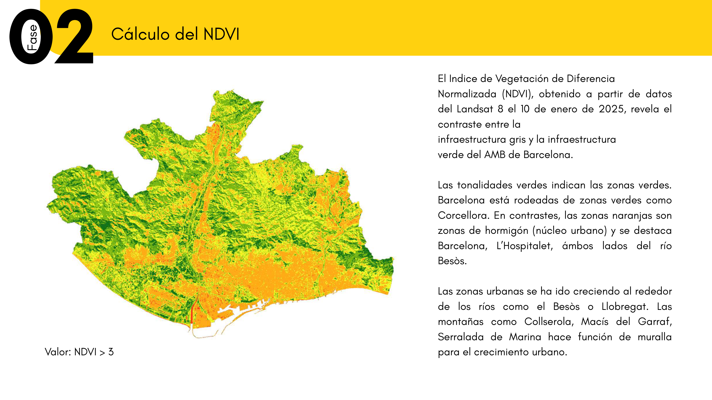

SIG & Teledetección
AMB (2026)
Taller de Análisis Ráster: Área Metropolitana de Barcelona Taller d'Anàlisi Ràster: Àrea Metropolitana de Barcelona Metropolitan Raster Analysis: Barcelona Metropolitan Area ラスター分析ワークショップ：バルセロナ大都市圏（AMB）
Cálculo de NDVI con imágenes satelitales (Landsat 9 y Sentinel 2), suelo artificializado (CLC18) y verificación del estándar de 10 m²/hab en 36 municipios. Càlcul de NDVI amb imatges satel·litàries (Landsat 9 i Sentinel 2), sòl artificialitzat (CLC18) i verificació de l'estàndard de 10 m²/hab a 36 municipis. Satellite NDVI processing (January 2024), artificial land mapping, and municipal green ratio verification against the 10 m²/hab standard. 2024年1月観測の衛星画像を用いたNDVI植生指標算出、都市計画指定緑地との差異分析、および市町村別緑地基準（10m²/人）の検証。